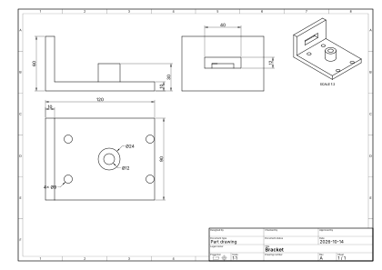

Layer 01 · Topology
B-rep
From an idea to the machine shop.
- public · MIT
- STEP export
Catallax + SolidDraft · by Pedro De PaivaPerth, AU
Geometry should not require a vendor’s permission. Catallax is a memory-safe Rust geometry kernel that bridges exact B-rep solids and implicit signed distance fields. Free and open-source forever. SolidDraft turns that foundation into a complete mechanical CAD system.
Drag to orbit · hand-built wireframe illustration
01Why this is free
Nearly every commercial CAD program runs on one of a handful of closed geometry kernels. Their owners licence them, meter them and can withdraw them. The maths inside is a century old and the algorithms are published. What is closed is the code, and the code is kept closed by law.
Property exists because things are scarce. If you take my lathe, I no longer have a lathe. If you copy this kernel, we still have it, and now you have one too. Nobody is made poorer for it, quite the opposite. Programs are not scarce, so the "intellectual property" over them has to be manufactured by the state: a legal privilege that forbids you from arranging your own bits in a pattern someone else arranged first. Patents are nothing more than grants of exclusive monopoly privilege by the State. As Murray Rothbard wrote in Man, Economy, and State (Ch. 10, Sec. 7)
A public kernel lets a solo engineer or a new CAD product enter the market without buying permission from an incumbent cartel. Copy this code. Change it. Sell a product built on it.
Catallax bridges the divide between explicit boundary representations (B-rep) and implicit signed distance fields (SDF). Legacy kernels treat these as separate worlds; we are engineering them into a single, unified foundation. Proving that this hybrid architecture can scale to the demands of industrial CAD is the exact problem Catallax exists to solve.
Catallax is released under the permissive MIT License—explicitly granting you the irrevocable right to use, copy, modify, publish, and sell it without restriction.
Read the MIT licenceA closed kernel · a free kernel
An exact B-rep and a signed distance field evaluate a single, unified feature tree. One definition is the truth.
Vision · in design Parametric parts, drawings, and assemblies meet implicit lattices, field-driven wall thickness, and simulation-led geometry. SolidDraft unites both worlds in a single interface—powered exclusively by Catallax.
In design: one modelling tolerance, separate from display and export accuracy. Every topological decision is recorded once: local tolerances remain explicit, and full topology is validated before publishing. Because downstream operations always evaluate against the primary definition, tolerance errors never accumulate.
In design
02What Catallax is
A geometry kernel in safe Rust, built for SolidDraft CAD. Two representations, one recipe: the signed distance field verifies approximated B-rep geometry directly against its true definition. If a step is B-rep only, the field adopts that state, checks all subsequent steps independently, and reports coverage. Field-only features stay pure field. Read the build order.
Pedro De Paiva · Perth
Mechanical engineer, 8+ years. Founder of Zigrawbohnbawerick Pty Ltd.
The engineer behind the kernel
03Kernel anatomy
01 / 04
Layer 01 · Topology
From an idea to the machine shop.
Layer 02 · Geometry
Geometry stored by definition.
Layer 03 · Operations
Cut. Unite. Intersect. Never quietly guess.
Layer 04 · Field
Exact solids. Continuous fields. One unified feature tree.
04KINEMATICS & TOPOLOGY
FROM SINGLE PRIMITIVES TO MESHING ASSEMBLIES · ONE UNIFIED GEOMETRY ENGINE
54,668
physical lines of Rust
0
lines of C or C++
409
enabled Rust tests
0
unsafe blocks
100% MEMORY-SAFE · ZERO C/C++ DEPENDENCIES · DETERMINISTIC TOPOLOGY · VIEW SOURCE METRICS
05Code is the geometry
No black box. The geometry, the decisions and the doubts are right here in Rust.
/// A vertex: a point stored by definition.
#[derive(Clone, PartialEq, Eq, Hash, Debug)]
pub struct Vertex {
/// The point.
pub point: PointId,
}
/// An edge on a curve. Both ends `None` is a ring edge over a whole closed curve.
#[derive(Clone, PartialEq, Eq, Hash, Debug)]
pub struct Edge {
/// The curve.
pub curve: CurveId,
/// Edge direction relative to the curve's natural direction.
pub sense: Sense,
/// Start vertex along the edge direction.
pub start: Option<VertexId>,
/// End vertex along the edge direction.
pub end: Option<VertexId>,
}/// The result of one decision. See `docs/ARCHITECTURE.md`.
#[must_use]
#[derive(Clone, Debug, PartialEq)]
pub enum Outcome<T> {
/// The strict answer is certified; the quantity is proven non-zero.
Proven(T),
/// The quantity is proven exactly zero.
ProvenCoincident(Coincidence),
/// The budget ran out; the quantity is proven to lie within the bound.
NotExact(NotExact),
/// The decision cannot be answered.
Refused(Refusal),
}let graph = run!(Stage::Intersect, intersect(model, a, b, dec));
let imprinted = run!(Stage::Imprint, imprint(model, &graph, dec));
let classes = run!(Stage::Classify, classify(model, &imprinted, dec));
let before = dec.stats().clone();
let selection = keep(&classes, &imprinted, op);
report.stages.push(StageRecord {
stage: Stage::Keep,
stats: statistics_delta(&before, dec.stats()),
marks: 0,
});
let body = run!(Stage::Sew, sew(model, &imprinted, &selection, dec));06ONE KERNEL, TWO REPRESENTATIONS
Exact topology, out in the open. Memory-safe Rust, precise analytical and NURBS surfaces, and watertight STEP output ready for the machine shop. Inspect every edge, face, and shell.
Continuous spatial math driven by the exact same recipe. Evaluates primitives, exact sketch profiles, extrusions, revolutions, and booleans with proven interval distance bounds and two-way B-rep cross-verification.
One schema drives both perspectives. The public catallax-recipe format defines, validates, and records the feature tree once. Both the B-rep builder and the implicit field evaluator execute directly from this shared definition, scaling from core primitives and booleans across the full mechanical feature vocabulary: chamfers, shells, fillets, sweeps, and lofts.
Legacy CAD is bloated, sluggish, and stuck in the past. Built from the ground up in Rust, SolidDraft pairs the parametric workflows you already know—feature trees, precision sketching, and a responsive 3D viewport
Inspect the core codebase or reserve your spot for the upcoming desktop release.

SolidDraft runs natively on the Catallax kernel—uniting parametric part modeling, production drafting, and headless automation in a single, zero-dependency stack.
Because SolidDraft and Catallax share a single unified architecture, every advancement in the kernel immediately expands what the CAD environment can express.
07Benchmarks
Hard cases. Real answers. Historical source-run figures, not a measurement of current main.
The five-tool comparison records completed construction and parameter rebuilds in every measured sample for 7 of 13 Catallax targets; correctness checks are reported separately.
08Release discipline
Every pull request faces format, clippy and the full enabled release test suite. Exact maths keeps us honest. OpenCASCADE checks our STEP.
Our rule: the same question gives the same answer on every machine and at every thread count. The deterministic catallax-verify exchange uses work budgets to choose outcomes and reports wall time separately.
09Support Catallax + SolidDraft
One unified stack: a foundational geometry kernel in safe Rust and the native CAD environment built to wield it. Both Catallax and SolidDraft are permanently free and open-source under the MIT License—built in public with zero proprietary dependencies and zero venture lock-in.
Independent sponsorship funds the hard mathematics directly: expanding complex surface intersections, accelerating real-time rebuilds, and pushing implicit field-driven geometry into open-source CAD. Back the engineering and help keep foundational geometry open for good.
CATALLAX ARCHITECTURE · CORE CAPABILITIES
KERNEL INVARIANTS: Zero unsafe Rust. Derived geometry is stored strictly by mathematical definition. A proven answer is never silently approximated, and only mathematically impossible geometry is an acceptable final refusal. Inspect the live benchmark suite and architecture roadmap →
10Special thanks
Catallax stands on decades of work published openly for anyone to study: foundational papers, candid engineering retrospectives, open standards, and public source code. That is how mathematics and engineering are meant to move.
None of this work entered Catallax as copied source code. What we drew from are the published ideas: a mathematical definition, a formal proof, an architectural lesson, or a hard-won mistake named plainly.
Clean-room implementation: Catallax is written from scratch and shares no source code or affiliation with the projects and authors below—we cite them in gratitude for their published research and open technical writing.
PUBLISHED WORK & ARCHITECTURAL LINEAGE
11Contact
Fork the kernel, test it against your hardest geometry, or build your own CAD tools on top of it. For technical inquiries, architectural discussions, or ecosystem partnerships, reach out directly.